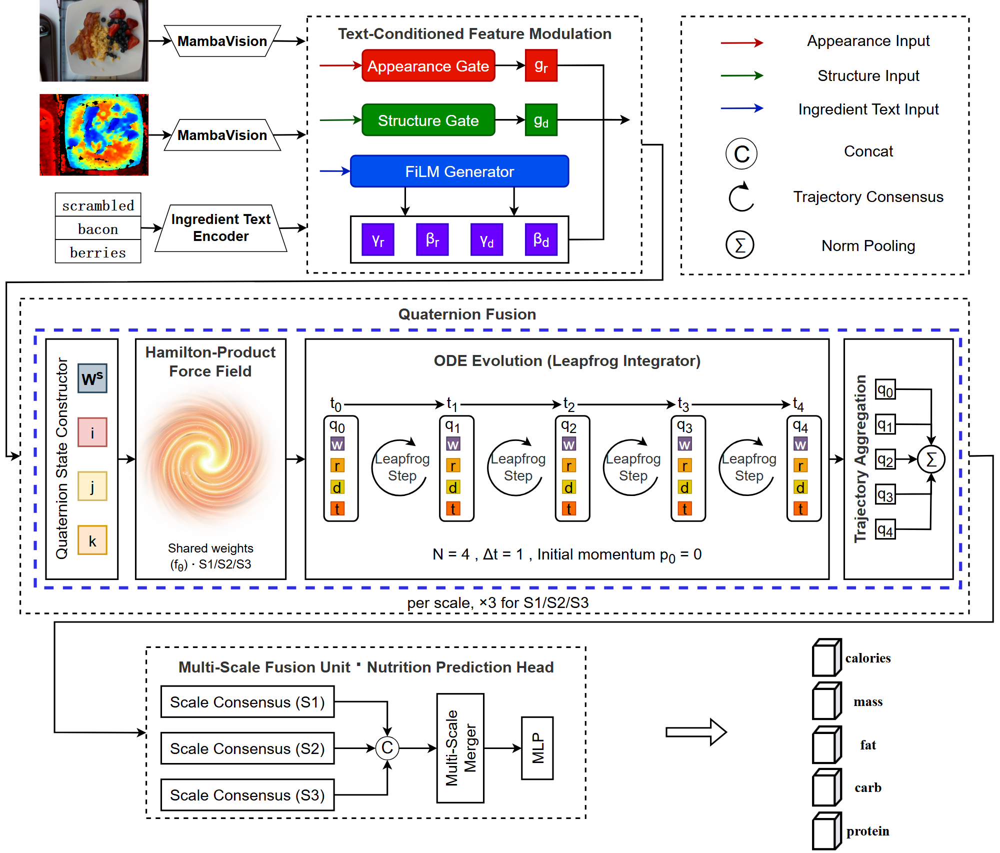
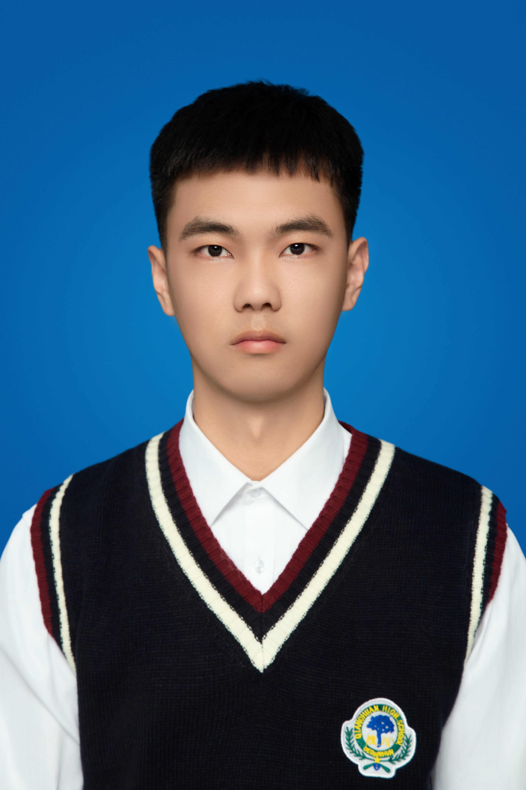
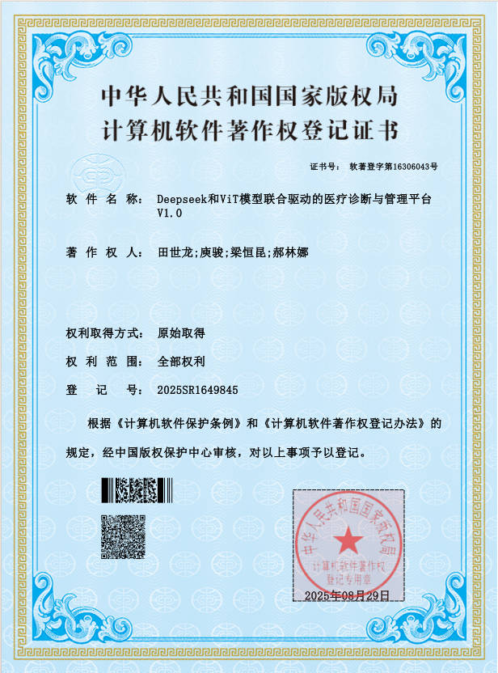

QuatODE-Net: Quaternion-Valued Neural ODE Fusion for RGB-D-Text Multimodal Food Nutrition Estimation
四元数值神经 ODE 融合用于 RGB-D-文本多模态食物营养估计
IEEE Transactions on Multimedia · 共同第一作者

点击放大
人工智能 · 本科毕业
郑州轻工业大学 | Zhengzhou University of Light Industry
研究方向聚焦 多模态食物营养估计：以 RGB-D 与配料语义为输入，在 频率域融合、四元数代数与神经 ODE 动力学层面重构跨模态交互结构。 工程侧具备 AI Agent 全栈开发能力，可独立完成从需求分析、架构设计、AI 应用开发到部署运维的完整链路。
人工智能（本科）
主修课程：Java 程序设计、深度学习、自然语言处理、机器学习、数据库概论、项目管理。在校期间综合素质排名前 5%。
指导老师：庾骏（Jun Yu）
参与多模态营养估计方向课题，负责频率域融合与四元数动态建模部分的方法设计与实验。
FMAFusion: Frequency-guided Multi-scale Aggregation Fusion for RGB-D Food Nutrition Estimation
FMAFusion：频率引导的多尺度聚合融合用于 RGB-D 食物营养估计
AAAI 2027 郑州轻工业大学 & 郑州工程技术学院 已投稿 · 审稿中
将全部融合操作迁移至傅里叶幅度谱，天然获得对跨模态错位的不敏感性、谱型感知的交互能力与样本自适应权重分配， 面向复杂食物场景下的营养估计鲁棒性问题。
RGB-D food nutrition assessment fuses color and depth imagery to estimate nutritional content and has become an important technical approach for intelligent nutrition evaluation. However, existing frequency-domain fusion approaches are largely confined to simple magnitude-spectrum replacement or fixed-weight fusion, without adequately leveraging the cross-modal global spectral-profile interaction and multi-scale aggregation inherent in the magnitude spectrum. We propose FMAFusion, which relocates all fusion operations into the Fourier magnitude spectrum, inherently providing reduced sensitivity to misalignment, spectral-profile-aware interaction, and sample-adaptive weighting. On the Nutrition5k dataset, FMAFusion achieves 13.85 MAE and 15.49% average PMAE, outperforming all compared methods.
Toward Sample-Adaptive Fusion: Frequency-Adaptive Alignment and Variational Gating for Multimodal Food Nutrition Estimation
面向样本自适应融合：多模态食物营养估计的频率自适应对齐与变分门控
WWW '27 / ACM 2027 The ACM Web Conference 准备投稿
指出主流融合框架依赖“全局静态折衷”的结构性缺陷，将多模态融合重新表述为逐样本条件选择问题， 并提出频率自适应分层融合 FAHFusion 与变分信息门控 VIGM。
Multimodal inputs have substantially improved benchmark accuracy, yet existing methods remain trapped in a structural statistical compromise: one set of globally optimized static parameters is applied to dishes that differ widely in geometric structure, semantic complexity, and modality reliability. We reformulate multimodal fusion as a per-sample conditional selection problem. FAHFusion achieves dynamically calibrated, selectively mixed frequency-domain alignment, while VIGM learns channel-level adaptive retention probabilities through variational inference. On Nutrition5k the framework attains an AVG PMAE of 12.35% and an AVG MAE of 11.19, a 17.67% relative error reduction over the previous best method.
QuatODE-Net: Quaternion-Valued Neural ODE Fusion for RGB-D-Text Multimodal Food Nutrition Estimation
四元数值神经 ODE 融合用于 RGB-D-文本多模态食物营养估计
IEEE TMM IEEE Transactions on Multimedia 准备投稿
将 RGB、深度与配料文本映射到四元数的三个虚轴，以 Hamilton 积的叉乘项在代数层面结构化嵌入 Mass = Volume × Density 的乘性物理律；并以神经 ODE 在连续语义尺度上迭代演化四元数状态， 把静态单步融合替换为可自校正的多步动力学过程。
Existing RGB-D multimodal fusion for food nutrition estimation is constrained by three structural limitations: the absence of physical modelling of the multiplicative law, the static single-step nature of cross-modal interaction, and the mismatch between the optimisation objective and clinical priorities. QuatODE-Net maps RGB, depth, and grams-weighted text onto the three imaginary axes of a quaternion and drives a neural ODE evolution with a Hamilton-product force field. On Nutrition5k it achieves an average MAE of 10.47 and an average PMAE of 13.45%, a 10.33% relative improvement over the previous best.
* 通讯作者 / 共同第一作者 · † 通讯作者
教育部
河南省教育厅
郑州轻工业大学
郑州轻工业大学
郑州轻工业大学
郑州轻工业大学
国家版权局 · 登记号 2025SR1649845
郑州轻工业大学

点击放大另持有 NTC 认证的 Java 软件开发证书。
2025.01 — 2025.09 · 软件著作权（第一作者，2025SR1649845）
在传统医疗管理系统基础上二次开发，基于 Spring Boot 3、Spring AI 与 RAG 技术构建 AI 智能体；接入 DeepSeek API 实现多轮对话与知识库检索，并结合 ReAct 推理范式赋予助手自主思考与工具调用能力；整合 Spring AI 与 ViT 视觉模型搭建智能诊断引擎。
2025.11 — 2026.03 · 软件著作权申请中（第一作者，2026R11L0032980）
基于 Spring AI Alibaba 与 Agent 架构搭建智能诊疗中心，集成诊断报告生成与支持图片上传的实时对话；RAG 检索能力交由 Agent 自主管理，可根据上下文决策调用时机，对患者结构化检验数据进行分析并完成疾病诊断与用药推荐。
点击图片可切换 适应窗口 / 原始尺寸 · 按 Esc 关闭